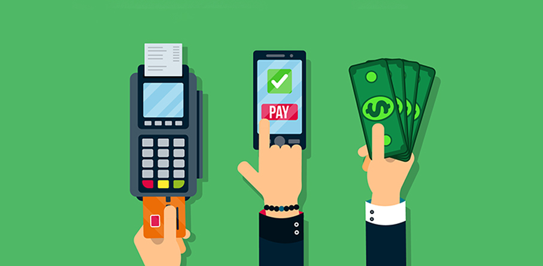
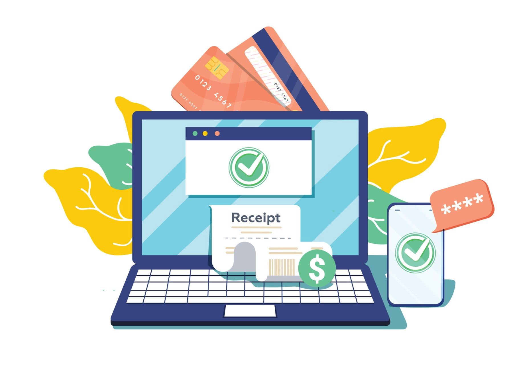
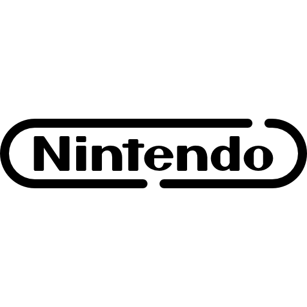
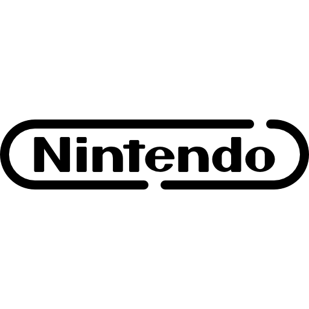

Gaming GT es una cadena de tiendas que se especializa en Tecnología, Juguetes y Videojuegos. Es una de las tiendas mas completas de Guatemala donde encontras los juegos más recientes ofreciendo a nuestros clientes un catálgo de juegos amplios para todas las plataformas y también accesorios para que nuestros clientes tengan una vida geek en el ámbito de los videojuegos.
Queremos que nuestros clientes se sientan seguros al navegar por nuestra tienda en línea o en las tiendas al momento de buscar un producto, queremos qu tengan la confianza en nosotros y brindar un servicio de calidad para nuestros clientes e informarlos de nuestros nuevos productos que seran vendidos en la tienda.

Puedes pagar con efectivo contra entrega en todo el país. Para este método de pago se recibirán Quetzales (GTQ.) en cantidades no mayores a Q. 3,000.00.
En la capital y alrededores los pilotos llevan un POS móvil para que puedas pagar con tarjeta.
En la capital y alrededores puedes pagar con cuotas desde la comodidad de tu casa. Por favor indícanos de que tarjeta es tu banco en comentarios al finalizar tu compra para que los compañeros lleven el POS correcto. Si te encuentras en el interior podríamos realizar tu cobro de cuotas por teléfono.
Banco GYT Continental: hasta 36 cuotas a precio de contado
BAC: te ofrecemos cuotas en 3, 6 y 10 y con el
Resto de las tarjetas: te ofrecemos cuotas de 3 y 6 siempre a precio de contado.
*Claro que puedes optar por mas cuotas con un pequeño recargo, para mas información puedes contactarnos por chat, Whatsapp o teléfono. En la mayoría de casos el recargo es de 7%.
Compra en línea: Puede pagar sus compras en nuestro sitio web con cualquier tarjeta de crédito/debito Visa o Credomatic. Los pagos son completamente seguros con los estandares mas altos en confidencialidad.
El costo de envío es de 20 quetzales en ordenes abajo de 200 quetzales, a partir de 200 el envío es GRATIS.
 


Todos nuestros productos están garantizados.
El tiempo de garantía dependerá del producto adquirido.
*Toda garantía cubre cualquier desperfecto de fábrica.*
Nota: Todo producto que sea presentado por garantía deberá venir acompañado de su empaque original, en buen estado, en caso de productos nuevos. Así mismo su comprobante de compra para productos nuevos o usados, y el sello de garantía no deberá presentar signos de haber sido violentado.
Garantía no aplica si el producto está dañado, golpes, líquidos derramados, mal uso del producto, uso incorrecto en voltage y/o sobrecargas eléctricas, uso inadecuado de adaptadores(si aplica), uso de dispositivos/adaptadores no originales y/o garantizados por GAMING GT, o presenta signos de haber sido desarmado y/o alterado.
Deberá traer sello de garantía y el mismo en buen estado y no alterado.
En caso el video juego no lo lea la consola, o de algún tipo de problema, se procederá al cambio del mismo, ya sea por uno del mismo nombre, mismo precio o se podrá tomar el valor cancelado como abono a alguno otro título de precio superior.
Todo cambio de video juego no leído por una consola deberá realizarse en un tiempo no mayor de 24 HRS, de lo contrario no nos hacemos responsables por la garantía.